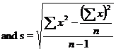

STAM101 :: Lecture 10 :: T-test

Definition – Assumptions – Test for equality of two means-independent and paired t test
Student’s t test
When the sample size is smaller, the ratio will follow t distribution and not the standard normal distribution. Hence the test statistic is given as which follows normal distribution with mean 0 and unit standard deviation. This follows a t distribution with (n-1) degrees of freedom which can be written as t(n-1) d.f.
This fact was brought out by Sir William Gossest and Prof. R.A Fisher. Sir William Gossest published his discovery in 1905 under the pen name Student and later on developed and extended by Prof. R.A Fisher. He gave a test known as t-test.
Inference About Two Means
Applications (or) uses
- To test the single mean in single sample case.
- To test the equality of two means in double sample case.
- Independent samples(Independent t test)
(ii) Dependent samples (Paired t test)
- To test the significance of observed correlation coefficient.
- To test the significance of observed partial correlation coefficient.
- To test the significance of observed regression coefficient.
Test for single Mean
- Form the null hypothesis
Ho: µ=µo
(i.e) There is no significance difference between the sample mean and the population mean
- Form the Alternate hypothesis
H1: µ≠µo (or µ>µo or µ<µo)
ie., There is significance difference between the sample mean and the population mean
3. Level of Significance
The level may be fixed at either 5% or 1%
4. Test statistic
which follows t distribution with (n-1) degrees of freedom

- Find the table value of t corresponding to (n-1) d.f. and the specified level of significance.
- Inference
If t < ttab we accept the null hypothesis H0. We conclude that there is no significant difference sample mean and population mean
(or) if t > ttab we reject the null hypothesis H0. (ie) we accept the alternative hypothesis and conclude that there is significant difference between the sample mean and the population mean.
| 2-Sample t-Test Using Minitab |
Example 1
Based on field experiments, a new variety of green gram is expected to given a yield of 12.0 quintals per hectare. The variety was tested on 10 randomly selected farmer’s fields. The yield (quintals/hectare) were recorded as 14.3,12.6,13.7,10.9,13.7,12.0,11.4,12.0,12.6,13.1. Do the results conform to the expectation?
Solution
Null hypothesis H0: m=12.0
(i.e) the average yield of the new variety of green gram is 12.0 quintals/hectare.
Alternative Hypothesis: H1:m≠ 12.0
(i.e) the average yield is not 12.0 quintals/hectare, it may be less or more than 12 quintals / hectare
Level of significance: 5 %
Test statistic:

From the given data

= 1.0853
Now
Table value for t corresponding to 5% level of significance and 9 d.f. is 2.262 (two tailed test)
Inference
t < ttab
We accept the null hypothesis H0
We conclude that the new variety of green gram will give an average yield of 12 quintals/hectare.
Note
Before applying t test in case of two samples the equality of their variances has to be tested by using F-test
or

where is the variance of the first sample whose size is n1.
is the variance of the second sample whose size is n2.
It may be noted that the numerator is always the greater variance. The critical value for F is read from the F table corresponding to a specified d.f. and level of significance
Inference
F <Ftab
We accept the null hypothesis H0.(i.e) the variances are equal otherwise the variances are unequal.
Test for equality of two Means (Independent Samples)
Given two sets of sample observation x11,x12,x13…x1n , and x21,x22,x23…x2n of sizes n1 and n2 respectively from the normal population.
- Using F-Test , test their variances
- Variances are Equal
Ho:., µ1=µ2
H1 µ1≠µ2 (or µ1<µ2 or µ1>µ2)
Test statistic

where the combined variance

The test statistic t follows a t distribution with (n1+n2-2) d.f.
- Variances are unequal and n1=n2
It follows a t distribution with
- Variances are unequal and n1≠n2
This statistic follows neither t nor normal distribution but it follows Behrens-Fisher d distribution. The Behrens – Fisher test is laborious one. An alternative simple method has been suggested by Cochran & Cox. In this method the critical value of t is altered as tw (i.e) weighted t
where t1is the critical value for t with (n1-1) d.f. at a dspecified level of significance and
t2 is the critical value for t with (n2-1) d.f. at a dspecified level of significance and
Example 2
In a fertilizer trial the grain yield of paddy (Kg/plot) was observed as follows
Under ammonium chloride 42,39,38,60 &41 kgs
Under urea 38, 42, 56, 64, 68, 69,& 62 kgs.
Find whether there is any difference between the sources of nitrogen?
Solution
Ho: µ1=µ2 (i.e) there is no significant difference in effect between the sources of nitrogen.
H1: µ1≠µ2 (i.e) there is a significant difference between the two sources
Level of significance = 5%
Before we go to test the means first we have to test their variances by using F-test.
F-test
Ho:., s12=s22
H1:., s12≠s22
\
Ftab(6,4) d.f. = 6.16
Þ F < Ftab
We accept the null hypothesis H0. (i.e) the variances are equal.
Use the test statistic

where

The degrees of freedom is 5+7-2= 10. For 5 % level of significance, table value of t is 2.228
Inference:
t <ttab
We accept the null hypothesis H0
We conclude that the two sources of nitrogen do not differ significantly with regard to the grain yield of paddy.
Example 3
The summary of the results of an yield trial on onion with two methods of propagation is given below. Determine whether the methods differ with regard to onion yield. The onion yield is given in Kg/plot.
Method I |
Method II |
n1=12 |
n2=12 |
SS1=186.25 |
SS2=737.6667 |
Solution
Ho:., µ1=µ2 (i.e) the two propagation methods do not differ with regard to onion yield.
H1 µ1≠µ2 (i.e) the two propagation methods differ with regard to onion yield.
Level of significance = 5%
Before we go to test the means first we have to test their variability using F-test.
F-test
Ho: s12=s22
H1: s12≠s22
\

Ftab(11,11) d.f. = 2.82
Þ F > Ftab
We reject the null hypothesis H0.we conclude that the variances are unequal.
Here the variances are unequal with equal sample size then the test statistic is

where
t =1.353
The table value for =11 d.f. at 5% level of significance is 2.201
Inference:
t<ttab
We accept the null hypothesis H0
We conclude that the two propagation methods do not differ with regard to onion yield.
Example 4
The following data relate the rubber yield of two types of rubber plants, where the sample have been drawn independently. Test whether the two types of rubber plants differ in their yield.
Type I |
6.21 |
5.70 |
6.04 |
4.47 |
5.22 |
4.45 |
4.84 |
5.84 |
5.88 |
5.82 |
6.09 |
5.59 |
6.06 |
5.59 |
6.74 |
5.55 |
|
|
|
|
|
|
|
|
Type II |
4.28 |
7.71 |
6.48 |
7.71 |
7.37 |
7.20 |
7.06 |
6.40 |
8.93 |
5.91 |
5.51 |
6.36 |
Solution
Ho:., µ1=µ2 (i.e) there is no significant difference between the two rubber plants.
H1 µ1≠µ2 (i.e) there is a significant difference between the two rubber plants.
Level of significance = 5%
Here
n1=16 |
n2=12 |
|
|
Before we go to test the means first we have to test their variability using F-test.
F-test
Ho:., s12=s22
H1:., s12≠s22
\ if
Ftab(11,15) d.f.=2.51
Þ F > Ftab
We reject the null hypothesis H0. Hence, the variances are unequal.
Here the variances are unequal with unequal sample size then the test statistic is

t1=t(16-1) d.f.=2.131
t2=t(12-1) d.f .=2.201
Inference:
t>tw
We reject the null hypothesis H0. We conclude that the second type of rubber plant yields more rubber than that of first type.
Equality of two means (Dependant samples)
Paired t test
In the t-test for difference between two means, the two samples were independent of each other. Let us now take particular situations where the samples are not independent.
In agricultural experiments it may not be possible to get required number of homogeneous experimental units. For example, required number of plots which are similar in all; characteristics may not be available. In such cases each plot may be divided into two equal parts and one treatment is applied to one part and second treatment to another part of the plot. The results of the experiment will result in two correlated samples. In some other situations two observations may be taken on the same experimental unit. For example, the soil properties before and after the application of industrial effluents may be observed on number of plots. This will result in paired observation. In such situations we apply paired t test.
Suppose the observation before treatment is denoted by x and the observation after treatment is denoted by y. for each experimental unit we get a pair of observation(x,y). In case of n experimental units we get n pairs of observations : (x1,y1), (x2,y2)…(xn,yn). In order to apply the paired t test we find out the differences (x1- y1), (x2-y2),..,(xn-yn) and denote them as d1, d2,…,dn. Now d1, d2…form a sample . we apply the t test procedure for one sample (i.e) 
,
the mean may be positive or negative. Hence we take the absolute value as . The test statistic t follows a t distribution with (n-1) d.f.
Example 5
In an experiment the plots where divided into two equal parts. One part received soil treatment A and the second part received soil treatment B. each plot was planted with sorghum. The sorghum yield (kg/plot) was absorbed. The results are given below. Test the effectiveness of soil treatments on sorghum yield.
Soil treatment A |
49 |
53 |
51 |
52 |
47 |
50 |
52 |
53 |
Soil treatment B |
52 |
55 |
52 |
53 |
50 |
54 |
54 |
53 |
Solution
H0: m1 = m2 , there is no significant difference between the effects of the two soil treatments
H1: m1 ¹ m2, there is significant difference between the effects of the two soil treatments
Level of significance = 5%
Test statistic
x |
y |
d=x-y |
d2 |
49 |
52 |
-3 |
9 |
53 |
55 |
-2 |
4 |
51 |
52 |
-1 |
1 |
51 |
52 |
-1 |
1 |
47 |
50 |
-3 |
16 |
50 |
54 |
-4 |
16 |
52 |
54 |
-2 |
4 |
53 |
53 |
0 |
0 |
Total |
-16 |
44 |
|
,
Table value of t for 7 d.f. at 5% l.o.s is 2.365
Inference:
t>ttab
We reject the null hypothesis H0. We conclude that the is significant difference between the two soil treatments between A and B. Soil treatment B increases the yield of sorghum significantly,
| Download this lecture as PDF here |